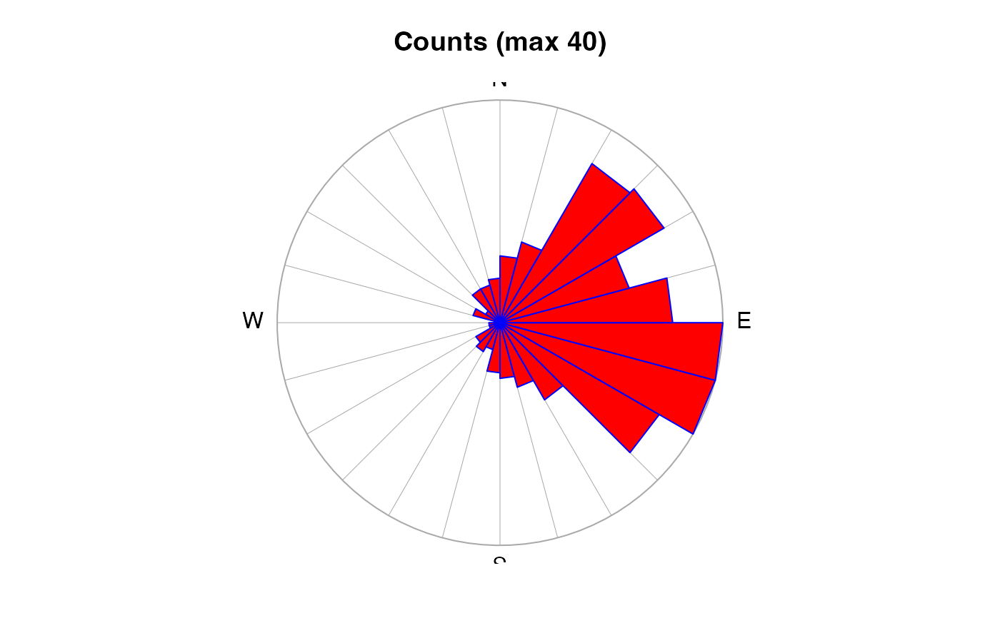

Create a wind-rose object, typically for plotting with
plot,windrose-method().
as.windrose(x, y, dtheta = 15, debug = getOption("oceDebug"))The x component of wind speed (or stress) or an object of class
met (see met), in which case the u and
v components of that object are used for the components of wind speed,
and y here is ignored.
The y component of wind speed (or stress).
The angle increment (in degrees) within which to classify the data.
A flag that turns on debugging. Set to 1 to get a moderate amount of debugging information, or to 2 to get more.
A windrose object, with data slot containing
| Item | Meaning |
n | the number of x values |
x.mean | the mean of the x values |
y.mean | the mean of the y values |
theta | the central angle (in degrees) for the class |
count | the number of observations in this class |
mean | the mean of the observations in this class |
fivenum | the fivenum() vector for
observations in this class (the min, the lower hinge, the
median, the upper hinge, and the max) |
Other things related to windrose data:
[[,windrose-method,
[[<-,windrose-method,
plot,windrose-method,
summary,windrose-method,
windrose-class
library(oce)
xcomp <- rnorm(360) + 1
ycomp <- rnorm(360)
wr <- as.windrose(xcomp, ycomp)
summary(wr)
#> Windrose data
#> -------------
#>
#> * Have n= 24 angles, separated by dtheta= 15
#>
#> * Data Overview
#>
#> Min. Mean Max. Dim. NAs OriginalName
#> n 360 360 360 1 0 -
#> x.mean 0.98158 0.98158 0.98158 1 0 -
#> y.mean 0.095651 0.095651 0.095651 1 0 -
#> theta -172.5 1.5618e-14 172.5 24 0 -
#> count 1 15 39 24 0 -
#> mean 0.655 1.3273 1.8527 24 0 -
#> fives 0.10167 1.3414 4.34 24x5 0 -
#>
#> * Processing Log
#>
#> - 2022-01-08 23:18:03 UTC: `create 'windrose' object`
#> - 2022-01-08 23:18:03 UTC: `as.windrose(x = xcomp, y = ycomp)`
plot(wr)
